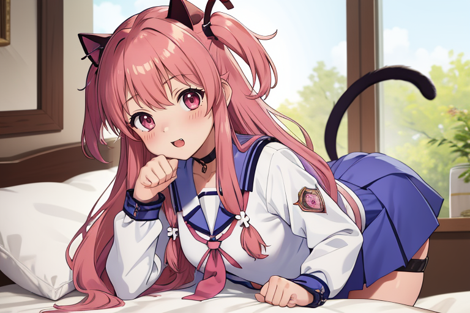

落とし物５
～迷い込んだものへ～
今は何人も立ち入るな。これは警告である。
ここは妖精によりて、趣旨混沌を遊ばせる場である。
闇に闇は相応しけれ、いまだこの場は完全ではなく、不安定極まりない。
いついかなる時に妖精様の怒りを買うか予期知れず、府の感情に飲まれけり。
世の理に触れ、世の理を知るべきは今ではない。さぁ、行くがいい。
ここは妖精によりて、趣旨混沌を遊ばせる場である。
闇に闇は相応しけれ、いまだこの場は完全ではなく、不安定極まりない。
いついかなる時に妖精様の怒りを買うか予期知れず、府の感情に飲まれけり。
世の理に触れ、世の理を知るべきは今ではない。さぁ、行くがいい。
～混沌の溜り場にて眠る瘴気～
死後の世界ってどんなところなんだろう。
そう私が死を意識し始めたのは、中学の頃、
ひいおじいちゃんが亡くなったことが一番大きかったと思う。
私は死に対して、それほど恐怖はないけれど、強いて言うなら
どんな場所か、教えてほしいと思う。そもそも、場所とか
そんな概念があるのかさえ分からないけれど。でも、私は
多分あるんだって思っている。確信は全くなかった。
でも、それが確信に近づくきっかけがあった。
当時馬鹿だった、私のクラスメイトの男友達が教えてくれた
Angel Beats!というアニメがあった。その子が言うには、
「面白いにシリアスが混ざった、死後の世界の話でくっそおもろい」
とのことだった。私の状況を知っていて、なおそんな発言が出来るのは
デリカシーがなさすぎるし、やっぱり馬鹿だなと思いつつも、私は
その作品を見ようと思った。別に見る必要があったわけではなかった。
私はその作品を見終わったとき、心の中にあった霧が晴れているのが分かった。
同時に、してやられたと思った。流石私の友達だ。後日、私はその友達に伝えた。
「面白いにシリアスが混ざった、死後の世界の話でくっそおもろかった」って。
回想に写る少女に、遠くから見ていた存在が、静かに語りかけた。
「魅入られちまったな、君も。」と。


- 
～妖精の好きなアニメ「Angel beats!」
より、ゆいさんでした！～
より、ゆいさんでした！～